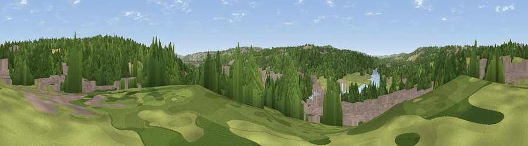

Viewpoint near Newburn
#39544 in England · top 85% of its area beats it · near NewburnWhere it is
The exact computed spot (NZ 16675 65525). Click the marker for map links.
The view, rendered

A 360° render of this exact spot computed from the terrain model, tree cover and land cover — summer colours, afternoon light, calibrated against photographs of famous viewpoints. Real trees, hedges and buildings will differ in detail.
The panorama
Grey silhouette: terrain skyline in each direction (720 bearings, Earth curvature and refraction included). Dashed green: skyline with trees (+15 m) and buildings (+8 m) as obstacles. Blue strip: how far the ground is visible on each bearing.
Where the view opens
Wedge length = distance to the farthest visible ground on that bearing (vegetation-aware). Rings at 10, 25 and 50 km.
What fills the view
43% woodland · 22% built-up · 21% grassland · 7% cropland · 7% water
Angular shares of the visible panorama (visual magnitude), not map area. Landscape diversity 0.61 (0–1 Shannon).
Key numbers
More beautiful places nearby
The staircase of upgrades: each row has a higher view potential than everything closer. Driving times are estimates from straight-line distance, calibrated against real road routing — check an actual route before setting out.
| Place | Direction | Drive | Score |
|---|---|---|---|
| Viewpoint near Blucher | E · 1 km | ~4 min | 55.1 |
| Heddon Common | WNW · 4 km | ~9 min | 56.8 |
| Heddon Laws | NW · 5 km | ~10 min | 57.5 |
| Viewpoint near Greenside | SW · 6 km | ~14 min | 74.2 |
| Viewpoint near Burnopfield | SSE · 8 km | ~16 min | 75.4 |
| Viewpoint near Sunniside | SE · 9 km | ~18 min | 77.6 |
| Pontop Pike | S · 13 km | ~23 min | 77.8 |
| Viewpoint near Rothbury | NNW · 35 km | ~54 min | 81.1 |
54.98405, -1.74097 · source: screening · position refined by local search. Computed location — check access rights before visiting.